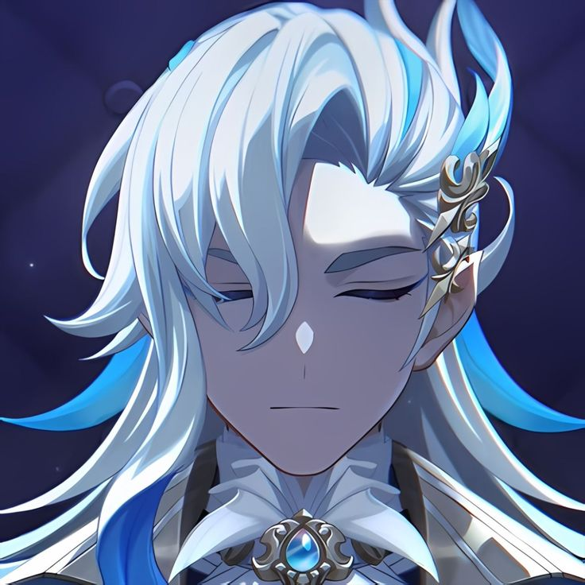
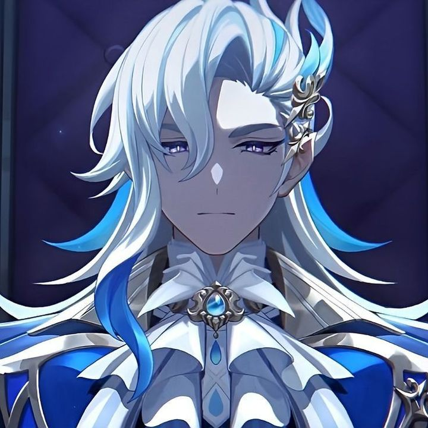

Artwork ❯

pacarku

milikku.
Recent Search
🔍 Layla ascension material ✖
🔍 Layla build ✖
🔍 Kalpalata lotus locations ✖
🔍 Layla cosplay ✖
Cryo Character
Cryo is one of the seven elements in Sumeru.
Sumeru
Sumeru is known for its knowledge and wisdom.
Akademiya
The Akademiya is the main educational center of Sumeru.